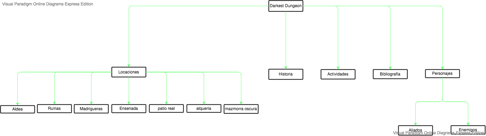

La idea tras esta implementación es usar un mapa desde Phaser usando clases Square e Image como botones que se disparan cada vez que son clickeados.
Habrán 7 botones que representan las 7 locaciones principales del juego Darkest Dungeon sobre su locación en el mapa, una vez se clickeen, se mostrará una imagen, en la esquina inferiorderecha, donde se podrá apreciar el lugar en cuestión con algunos de sus habitantes. Al clickear esa foto se desplazará a la página d elocaciones y a la subsección de dicha locación para ver más información.